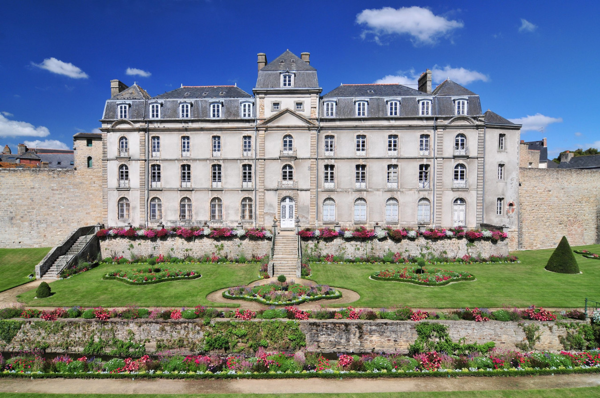

CIÊNCIA E TECNOLOGIA
Em boa conservação, castelo de 640 anos é achado enterrado em hotel
na França; vídeo
...
Por JB CIÊNCIA COM JB Internacional
redacao@jb.com.br
Publicado em 09/04/2024 às 09:15
Alterado em 09/04/2024 às 09:15
Em meio ao processo para ampliação de um museu em um hotel na França, trabalhadores se
depararam com uma megaestrutura do século XIV que guardava um castelo construído entre os anos
1380-85.
O castelo, de nome l'Hermine, foi construído a pedido do duque João IV, o Conquistador, que se
instalou na cidade de Vannes e fez dela a capital do ducado. Atualmente, o local é ocupado pelo pátio
do Hotel Lagorce.
O Instituto Nacional de Investigação Arqueológica Preventiva (INRAP, na sigla em francês) da
França explicou que as escavações foram realizadas entre a primavera e o outono de 2023. Os
arqueólogos expressaram seu choque com o quão completos e bem preservados estão os restos do
castelo.
"A escavação revelou aos poucos a planta do pavimento térreo: a casa ducal, com 42 metros de
comprimento e 17 metros de largura, é dotada de paredes de espessura excepcional [...] diretamente
delimitado por um fosso, é flanqueado a oeste do que se pode chamar de 'torre quadrada'", informou o
INRAP.
Os pesquisadores também descobriram "várias escadas", uma das quais era "uma escada
notavelmente preservada, com núcleo decorado e três degraus". As paredes têm uma espessura de
impressionantes 5,60 metros.
Além disso, as escavadoras encontraram dezenas de objetos "relacionados à vida quotidiana do
castelo", incluindo moedas, pratos de cozinha e joias. A umidade do local também preservou notáveis
peças de madeira, inclusive fragmentos de barris.
Tal como descrevem os arqueólogos, o castelo possui latrinas e um conjunto de tubos de drenagem.
Aparentemente, a sua marca era a de um típico castelo de contos de fadas, rodeado de água.
Especula-se que tinha entre três e quatro andares e os resíduos eram despejados em uma fossa
externa.
"A construção […] decorreu em uma única fase, o que atesta a importância dos recursos financeiros e
humanos utilizados", acrescentou o INRAP indicando que "os vestígios indicam que D. João IV
soube rodear-se dos melhores engenheiros e artesãos do seu tempo". (com Sputnik Brasil)